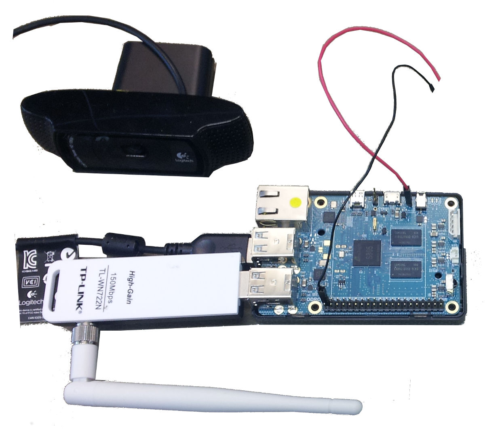
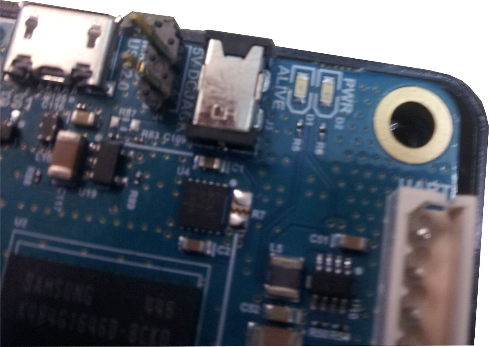
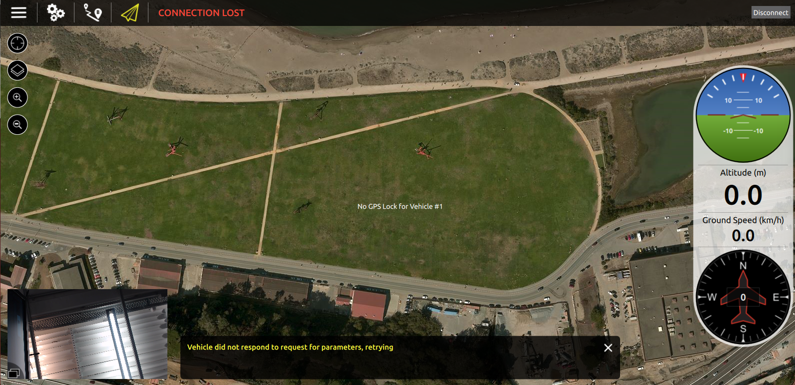

Odroid C1에서 QGroundControl로의 동영상 스트리밍
이 글 일부는 내용이 오래됐습니다. 커뮤니티 구성원들은 최근 우분투 버전에 맞추어 절차를 다시 테스트해주었으면 좋겠고, 위치에 오드로이드 설치 절차 내용도 가져다 두었으면 좋겠습니다.
이 주제에서는 보조 컴퓨터(Odroid C1)에 붙은 카메라(로지텍 C920)로 동영상을 촬영한 후 (무선랜 연결에 실어) 다른 컴퓨터로 실시간 전송하여 QGroundControl에 띄우는 방법을 보여드립니다.
하드웨어 구성은 아래 그림과 같습니다. 다음 부분으로 구성합니다:
- 오드로이드 C1
- 로지텍 카메라 C920
- 무선랜 모듈 TP-LINK TL-WN722N

절차는 우분투 14.04에서 테스트했지만 최근 우분투 버전에서도 비슷한 방식으로 동작할지 모릅니다.
오드로이드 C1에 리눅스 환경 설치
리눅스 환경(우분투 14.04)를 설치하려면, 오드로이드 C1 자습서(기록 보관 사이트)에 주어진 절차를 따르십시오. 자습서에는 오드로이드 C1에 UART 케이블로 연결하는 방법과 이더넷 케이블로 연결하는 방법을 알려줍니다.
대안 전원 연결 설정
오드로이드 C1에는 5V 직류 전원 커넥터로 전원을 공급합니다. 오드로이드를 드론에 연결할 경우 아래 그림과 같이 홀을 관통하는 방식으로 5V 직류 연결 커넥터 옆 핀 두개의 납땜을 권장합니다. 전원은 예제 설정과 같이 점퍼 케이블(그림 위쪽의 적색 케이블)을 직류 전압 공급원(5V)과 오드로이드 C1에 연결하고, 점퍼 케이블(그림 위쪽의 흑색)을 회로의 접지부와 오드로이드 C1의 접지 핀을 연결하여 끌어옵니다.

오드로이드 C1 무선랜 연결 활성화
이 자습서에서는 TP-LINK TL-WN722N 무선랜 모듈을 사용합니다. 오드로이드에서 무선랜 연결을 사용하려면, 오드로이드 C1 자습서의 안테나로 무선랜 연결하기 절 단계를 따르십시오.
무선랜 액세스 포인트 구성
이 절에서는 오드로이드 C1을 액세스 포인트로 구성하는 방법을 알려드리겠습니다. 이 내용은 pixhawk.org의 "액세스 포인트" 구축 자습서(더이상 내용이 없음)의 일부 적용 예에서 가져왔습니다. Odroid C1으로 촬영한 카메라 동영상을 컴퓨터에서 실행하는 QGroundControl로의 실시간 전송을 활성화하려 한다면 이 절의 내용을 따를 필요가 없습니다. 그러나, 오드로이드 C1를 자체 동작 모드 시스템으로 사용할 수 있는 액세스 포인트로 구성할 것이기에 이 내용을 보여드립니다. TP-LINK TL-WN722N을 무선랜 모듈로 활용합니다.
다음 단계에서는 오드로이드 C1에서 무선랜 모듈 이름을 wlan0(으)로 지정했음을 가정합니다. wlan0이(가) 나오는 모든 부분 대신 인터페이스 이름이 차이가 있는 경우 적절한 이름(예: wlan1)으로 바꾸십시오.
액세스 포인트 내장 컴퓨터
좀 더 자세한 내용은 RPI-Wireless-Hotspot 문서를 살펴볼 수 있습니다
필요한 프로그램을 설치하십시오
sudo apt-get install hostapd udhcpd
DHCP를 설정합니다. /etc/udhcpd.conf 파일을 편집하십시오
start 192.168.2.100 # This is the range of IPs that the hotspot will give to client devices.
end 192.168.2.200
interface wlan0 # The device uDHCP listens on.
remaining yes
opt dns 8.8.8.8 4.2.2.2 # The DNS servers client devices will use (if routing through the Ethernet link).
opt subnet 255.255.255.0
opt router 192.168.2.1 # The Onboard Computer's IP address on wlan0 which we will set up shortly.
opt lease 864000 # 10 day DHCP lease time in seconds
기타 모든 'opt' 항목은 비활성화하든지, 설정 방법을 안다면 적절하게 설정해야합니다.
/etc/default/udhcpd 파일을 편집하여 다음 줄을:
DHCPD_ENABLED="no"
다음처럼 주석 처리하십시오.
#DHCPD_ENABLED="no"
자체 컴퓨터에 고정 IP 주소를 할당해야합니다. /etc/network/interfaces 파일을 편집하여 iface wlan0 inet dhcp 줄 (또는 iface wlan0 inet manual줄)을 다음과 같이 바꾸십시오:
auto wlan0
iface wlan0 inet static
address 192.168.2.1
netmask 255.255.255.0
network 192.168.2.0
broadcast 192.168.2.255
wireless-power off
초기 (무선랜 클라이언트) 자동 설정을 끄십시오. 다음 줄을(아마 해당 설정은 같이 두지 않든지 모두 두지 않는게 좋을지도 모릅니다):
allow-hotplug wlan0
wpa-roam /etc/wpa_supplicant/wpa_supplicant.conf
iface default inet dhcp
다음과 같이 주석처리하십시오:
#allow-hotplug wlan0
#wpa-roam /etc/wpa_supplicant/wpa_supplicant.conf
#iface default inet dhcp
오드로이드 C1 자습서(pixhawk.org에 있었음)의 내용을 따라 무선랜 연결을 설정했다면, /etc/network/interfaces.d/wlan0 파일을 이미 만들었을지도 모릅니다. 파일의 해당 줄을 모두 주석처리하여 더이상 설정 내용이 반영되지 않게 하십시오.
HostAPD를 설정하십시오. WPA 보안 네트워크를 만들려면 /etc/hostapd/hostapd.conf 파일을 편집(없다면 새로 만드십시오)하고, 다음 줄을 추가하십시오:
auth_algs=1
channel=6 # Channel to use
hw_mode=g
ieee80211n=1 # 802.11n assuming your device supports it
ignore_broadcast_ssid=0
interface=wlan0
wpa=2
wpa_key_mgmt=WPA-PSK
wpa_pairwise=TKIP
rsn_pairwise=CCMP
# Change the to the proper driver
driver=nl80211
# Change these to something else if you want
ssid=OdroidC1
wpa_passphrase=QGroundControl
ssid=, channel=, wpa_passphrase= 값을 원하는 값으로 바꾸십시오. SSID는 다른 서비스에 뿌려주는 핫스팟 이름이고, 채널은 핫스팟을 실행할 주파수 대역이며, wpa_passphrase는 무선 네트워크의 암호입니다. 더 많은 옵션 내용을 보려면 /usr/share/doc/hostapd/examples/hostapd.conf.gz 파일을 살펴보십시오. 해당 영역에서 사용하지 않는 채널을 확인하십시오. wavemon 과 같은 도구를 활용해볼 수 있습니다.
/etc/default/hostapd 파일을 편집하여 다음 줄을:
#DAEMON_CONF=""
다음처럼 주석을 해제하고 변수값을 입력하십시오.
DAEMON_CONF="/etc/hostapd/hostapd.conf"
이제 내장 컴퓨터에서 무선 핫스팟 서비스를 쓸 수 있습니다. 핫스팟을 부팅할 때 가동하려면 다음 추가 명령을 실행하십시오:
sudo update-rc.d hostapd enable
sudo update-rc.d udhcpd enable
내장 컴퓨터 자체를 액세스 포인트로 띄워 나타내는데는 이정도면 충분하며, 지상 통제 장치에서 연결할 수 있습니다. 실제 액세스 포인트로 동작하게끔 하려면(무선랜 트래픽을 온보드 컴퓨터의 이더넷 연결로 전달하려면), 라우팅과 네트워크 주소 변환(NAT)을 설정해야합니다. 커널에서 IP 전달을 활성화하십시오:
sudo sh -c "echo 1 > /proc/sys/net/ipv4/ip_forward"
커널에서 NAT를 활성화하려면, 다음 명령을 실행하십시오:
sudo iptables -t nat -A POSTROUTING -o eth0 -j MASQUERADE
sudo iptables -A FORWARD -i eth0 -o wlan0 -m state --state RELATED,ESTABLISHED -j ACCEPT
sudo iptables -A FORWARD -i wlan0 -o eth0 -j ACCEPT
이 설정을 영구적으로 동작하게 하려면, 다음 명령을 실행하십시오:
sudo sh -c "iptables-save > /etc/iptables.ipv4.nat"
/etc/network/interfaces 파일을 편집하여 다음 줄을 파일 하단에 추가하십시오:
up iptables-restore < /etc/iptables.ipv4.nat
지스트리머 설치
컴퓨터와 오드로이드 C1에 지스트리머 꾸러미를 설치하고 스트리밍을 시작하려면, QGroundControl README에 설명하는 내용을 따르십시오.
uvch264 플러그인으로 오드로이드에서 스트리밍 전송을 시작할 수 없다면, v4l2src 플러그인도 함께 시작하게 할 수도 있습니다.
gst-launch-1.0 v4l2src device=/dev/video0 ! video/x-h264,width=1920,height=1080,framerate=24/1 ! h264parse ! rtph264pay ! udpsink host=xxx.xxx.xxx.xxx port=5000
여기사 xxx.xxx.xxx.xxx 부분은 QGC를 실행하는 컴퓨터의 IP 주소입니다.
Permission denied오류가 뜬다면, 위 명령 앞에sudo를 붙여야합니다.
대신 아래와 같이 현재 사용자를 video 그룹에 추가할 수 있습니다(그리고 로그아웃한 다음 다시 로그인하십시오).
sh
sudo usermod -aG video $USER
모든 부분이 제대로 동작한다면, 아래 화면과 같이 QGroundControl의 비행 모드 창 좌측 하단 구석에서 실시간 동영상 전송 화면을 볼 수 있어야합니다.

실시간 동영상 전송 화면을 누르면, 좌측 하단 구석에는 인공위성 지도가 뜨고, 전체 배경에 동영상이 뜹니다.